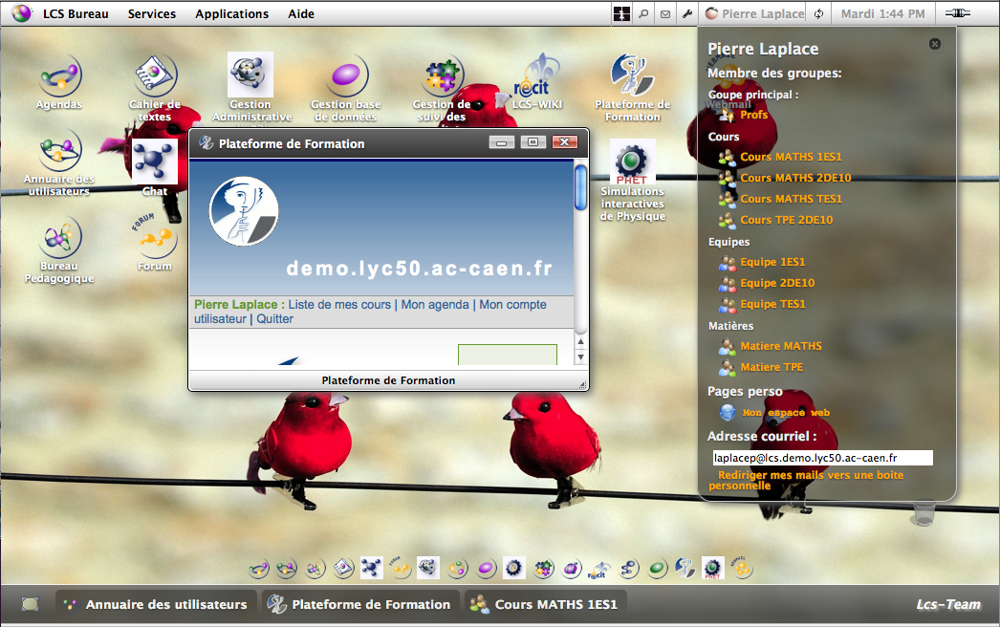

Voir ma fiche : Ouvre un panneau comprenant plusieurs liens propres à l’utilisateur connecté (voir détail plus bas)
Voir ma fiche : Ouvre un panneau comprenant plusieurs liens propres à l’utilisateur connecté (voir détail plus bas)Lcs-Bureau est une interface graphique du LCS. Il peut être comparé au bureau du système d’exploitation de votre ordinateur, window, Ubuntu, MacOs, etc.... Comme lui, Lcs-Bureau vous permet d’accéder facilement aux applications installées, de personnaliser votre bureau, d’accéder à vos espaces personnels, etc.
Lcs-Bureau est supporté par les navigateurs Firefox 3.x, Internet Explorer (IE8), Safari v-5.x, Google Chrome v-6.x. Voir la liste des navigateurs supports.
Le bureau lcs est composé de trois blocs ou parties :

Située en haut du bureau, elle se divise en deux parties, gauche et droite
La partie droite permet d’accéder aux fonctions suivantes
Voir ma fiche : Ouvre un panneau comprenant plusieurs liens propres à l’utilisateur connecté (voir détail plus bas)
La partie gauche contient le menu déroulant présentant quatre sous-menus. Le menu s’active sur un clic et fonctionne ensuite au survol de la souris (menus MacOs).
Ouvre sur les liens de déconnexion et de personnalisation du bureau (Préférences)

Le lien “Préférences” ouvre une fenêtre permettant de personnaliser votre bureau (Voir Personnalisation)
Propose les services de base du LCS soit :
Propose les liens permettant d’accéder aux applications du lcs (modules et plugins). Les liens présentés sont fonction de l’activation ou non des modules et plugins concernés. Pour certaines applications, un sous-menu est proposé, permettant l’accès à des pages précises de l’application.
Propose les liens vers la documentation LCS et la page d’informations Lcs-Bureau
Le menu déroulant ne peut jamais être modifié. Les liens vers les applications Lcs validées sont ainsi toujours disponibles.
La barre d’état reçoit les vignettes des fenêtres ouvertes. ( voir Gestion des fenêtres )
A chaque l’ouverture d’une fenêtre, une vignette est créée dans la barre d’état. Un clic sur cette vignette permute l’état de cette fenêtre (visible au premier plan ou réduite). Vous pouvez ainsi comme dans vos bureaux préférés, gérer l’affichage de vos applications LCS.
A gauche de la barre d’état, l’icône “Bureau” permet de cacher toutes les fenêtres ouvertes et affiche le bureau vierge (avec les icônes).
Le bureau est la zone principale du Lcs-Bureau. Il contient les icônes et le dock. C’est dans cette zone que s’ouvrent les fenêtres contenantes des différentes applications. Le bureau est personnalisable à tout moment par chaque utilisateur.
Les taille et l’affichage des icône sont personnalisable. Un clic sur une icône met celle-ci en surbrillance, un double-clic ouvre l’application correspondante
Chaque application ouvre dans une nouvelle fenêtre. Chaque fenêtre est manipulable par une série de boutons située dans la barre d’entête :
Un clic sur le bouton ouvre le panneau d’informations utilisateur. Ce panneau comprend :
Chaque nom de groupe est un lien pointant vers la page de l’annuaire correspondante, vous permettant ainsi en deux clics d’afficher la liste des membres d’une groupe. Il est également possible d’envoyer un courriel à ce groupe en cliquant sur l'icône Courriel.
Vous pouvez masquer/afficher les parties “Membre des groupes”, “Pages perso”, “Adresse courriel” en cliquant sur le titre voulu.
Lorsque le panneau d’informations utilisateur est ouvert mais partiellement masqué par une fenêtre du bureau, un clic sur le panneau le ramène au premier plan.
Pour fermer le panneau d’informations utilisateur, cliquer sur l'icône (croix) en haut à droite du panneau.
Sont personnalisables par l’utilisateur:
Pour personnaliser le bureau, cliquez sur “Lcs-Bureau”, “Préférences”.
Pour modifier l’image d’arrière plan, cliquer sur modifier l’image et choisir une des images proposées en cliquant sur la vignette correspondante. Cliquer alors sur “Appliquer” pour afficher l’image comme arrière-plan.
N’oubliez pas d’enregistrer si vous souhaitez conserver cette image et la retrouver lors de vos prochaines connexions.
Vous pouvez également utiliser une image personnelle, celle-ci devant se situer dans votre espace web (Dossier public_html). Il est donc nécessaire pour afficher une image perso que votre espace web soit activé par l’administrateur.
Pour afficher une image personnelle comme arrière-plan :
Par défaut, l’image d’arrière plan est redimensionnée à la taille du bureau, sans tenir compte des proportions. Vous pouvez positionner votre image sans en modifier les proportions, avec redimensionnement ou non.
Cliquez dans la zone de saisie pour afficher une palette de couleur. Choisissez ensuite votre couleur.
L’utilisateur peut supprimer une ou plusieurs icônes du bureau par glisser/déposer de celle(s)-ci dans la corbeille (en bas à droite du bureau). Par défaut, seules les icônes pointant vers les applications LCS sont affichées sur le bureau. Pour créer une nouvelle icône (ou restaurer une icône supprimée), il suffit de glisser/déposer un item du menu déroulant ou du panneau d’informations utilisateur sur le bureau.
Vous pouvez choisir entre trois taille d’icône dans la page Préférences, et aussi paramétrer la hauteur du champ d’affichage des icônes (à partir du haut de l’écran)


Situé en bas du bureau au dessus de la barre d’état, le dock d’icônes est un clone des icônes du bureau et n’offre, en l’état, que peu de possibilités de personnalisation. Si on choisi de l’afficher, toutes les icônes du bureau seront alors affichées dans le dock. Au survol de la souris, l’icône s’agrandit et le nom de l’application est affiché. Le dock reste visible au dessus des fenêtres ouvertes.
Lcs-Bureau propose un système d'information utilisateur par notifications. Outre les notifications propres au Lcs-Bureau, vous pouvez bénéficier des notifications de nouveau courriel (état des dourriels non lus dans votre boite) et des notifications de nouveaux messages sur le forum.
| WindowXP | MacOs | Ubuntu | |
| Firefox | v-3.6.8+++ | v-3.6.8+++ | |
| Safari | v- 5.0.1+++ (6533.17.8) | ||
| Google Chrome | v-6.0.472.53+++ |
v-6.0.472.53 +++ Les selects ne prennent pas le focus dans le formulaire Préférences. |
|
| Internet Explorer |
IE6 et <+++ (non supporté)
IE7 +++ IE8+++ |
xxxxxx | xxxxxx |
| Opéra | |||
| Konqueror |
Legende :
| +++ Pas de défauts d’affichage connus | +++ | +++ |
Pour ouvrir une application LCS dans une fenêtre du bureau depuis une autre application LCS (plugins), le lien ( balise <a/> ) doit être de la forme :
<a href="[url_page]" class="open_win ext_link" rel="[id_appli]" title="[titremême vide]">
Les attributs indispensables étant l’atribut class associé aux valeurs open_win et ext_link et l’attribut rel dont la valeur doit être l’identifiant de l’appplication en minuscules (maint pour l’appli maintenance, spip pour le forum, cdt pour le cahier de texte, etc...).